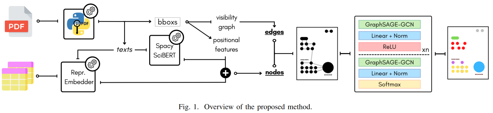
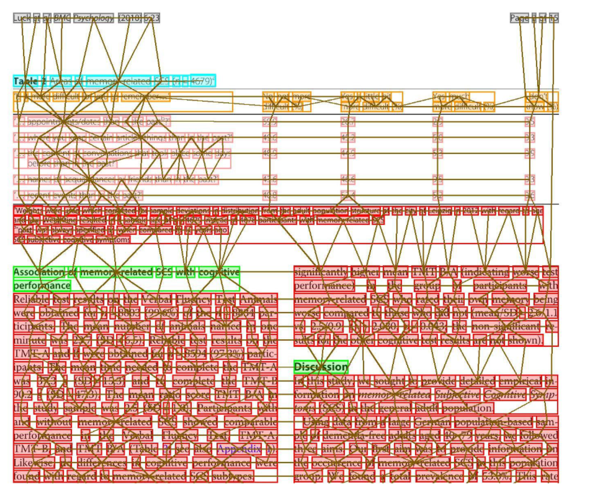

Graph Neural Networks and Representation Embedding for Table Extraction in PDF Documents
完成时间：2023-04-22
题目：《用于PDF文档中表格抽取的图神经网络和表示嵌入》
一、主要贡献
1. 利用GNN解决表格提取问题。通过适当设计的表示嵌入来丰富节点特征。这些表示不仅有助于更好地将表格与论文的其他部分区分开来，还有助于将表格单元格与表格头区分开来
2. Table Extraction被重新定义为一个节点分类任务，由一个GNN来处理。图节点由基本PDF对象组成，边则根据节点之间的关系和相互距离计算。
二、方法概述

1. 将数据集进行合并去构建新的数据集
2. 将PDF页面转换为图：
（1） 使用PyMuPDF提取PDF中基本项的信息
（2） 将每个节点与其最近的可见节点相连
（3） 为每个节点和边添加特征：用位置和文本特征丰富图节点；引入表示嵌入特征来将表单元格和表头与其他单元格区分开来，定义bounding box的距离edge(u, v)

3.使用GNN 对于结构信息的构建比较有帮助
在这里采用的是GNN的一个归纳扩展——GraphSAGE-GCN；并通过消息传递的方法，通过图聚集对节点进行更新：对于G=（V,E），每个V从邻居节点N(V)中收集信息（消息），可以通过计算边权重来衡量它们
在训练过程中，我们通过排除没有表格的页面和舍弃剩余页面中的一些"文本"节点来处理这种类别不平衡问题。如果在原图中存在一条从v到任意具有不同标签的节点u的边数大于k的路径，则丢弃"文本"节点v。废弃的节点被称为"岛屿"。通过去除岛屿，可以减少被同类其他节点包围的节点数量。通过这种方式，消息传递算法聚合了更多来自不同来源的消息，帮助方法区分对象。